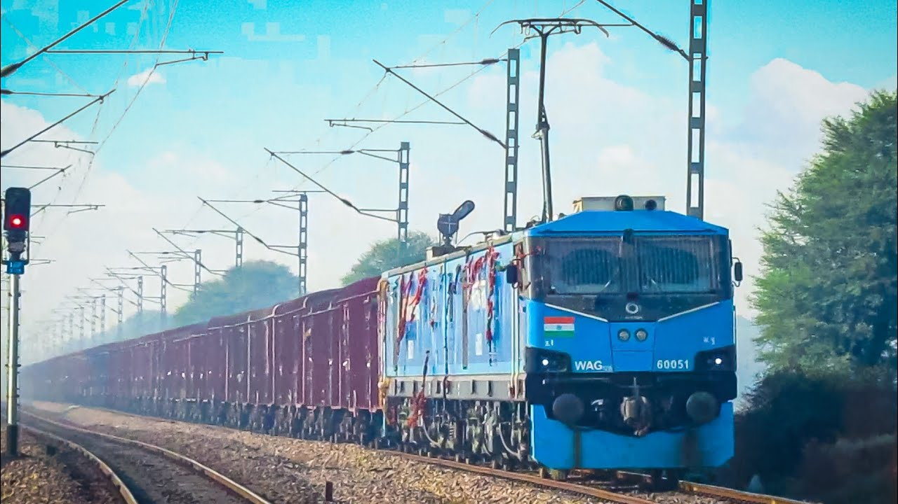
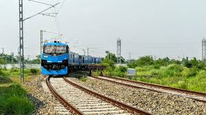
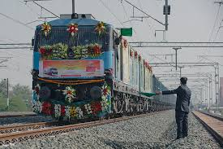

WAG Locomatives
WAG 12

The Indian locomotive class WAG-12B is a class of 25 kV AC electric locomotives that was developed in 2017 by Alstom with technological collaboration with Indian Railways. The model name stands for wide gauge (W), alternating current (A), goods traffic (G) locomotive-12. They entered trial service in 2019. A total of 450 WAG-12B have been built at Electric Locomotive Factory, Madhepura, Bihar, India.
History
WAG 12A
.jpeg)
With a power output of 12,000 hp, the WAG 12 is twice as powerful as its immediate predecessor, WAG-9, making it one of the most powerful freight locomotives in the world. The locomotive is being developed for deployment on the Dedicated Freight Corridors, where it will be used to haul freight trains weighing more than 6,000 tonnes (5,900 long tons; 6,600 short tons) at speeds of 100 km/h (62 mph) to 120 km/h (75 mph), doubling the average speed of freight trains in the sector.
It is the original version which was imported. Limitations of the original WAG-12 design resulted in modifications and the WAG-12B variant. Only one unit (60001) was made. This unit has been modified to WAG-12B specification.
WAG 12B
.jpeg)
The origins of WAG-12B can be traced back to 2006. When the Government of India approved the Dedicated Freight Corridor (DFC) project and set up the DFCCIL to build it.[3] In order to run trains at maximum efficiency, even the most powerful locomotive of that era, the WAG-9 was found inadequate. Hence, it was decided to procure new, powerful locomotives for dedicated operations on the two DFCs in an manner unlike it was done until now, where locos were built at CLW by Indian Railways under technology transfer agreements.In June 2008, the Ministry of Railways invited bids from global firms to design and develop the locomotives. The initial deal was to set up a new electric locomotive factory at Madhepura, Bihar to build and maintain 660 high-horsepower locomotives in a joint venture where Indian Railways would hold a 26% stake and the bidder 74%. This would have been the first foreign direct investment in the fully state-owned railway sector of the country.
It is the current version in production.
Development

This invitation received bids from General Electric, Alstom, Bombardier Transportation, Siemens Mobility, China CNR and CSR Corporation. The number of locomotives to be built was subsequently increased from 660 to 800.[3] The Research Design and Standards Organisation published a specification in June 2013,[6] detailing the capability requirements for an eight-axle locomotive intended to be used on Dedicated Freight Corridors (DFC). It was not until November 2015, however, that Alstom was finally awarded the contract to build the locomotives.
Production

As development of the engines progressed, Alstom outsourced the task of producing traction transformers for the locomotives to Swedish-Swiss multinational corporation ABB in 2016. These all-weather transformers were to be produced in Vadodara, Gujarat.[14] In 2017, Alstom outsourced the task of developing, testing, and maintaining the brakes of the locomotives to German brake manufacturing firm Knorr-Bremse. These brakes were to be produced at Palwal in the Indian state of Haryana.[15] The couplers of the locomotive were designed and developed by French Railway company Faiveley Transport. Around 85-90% of the components will be procured from within India.[16]
The first body shell of the locomotive was delivered to the Haldia Port in West Bengal on 20 September 2017. It was then transferred to the Electric Locomotive Factory (Alstom Madhepura) for final assembly,[4] which began on 11 October 2017.[17][18] The first locomotive, numbered 60001, was tested in the Madhepura factory on 27 February 2018, one day before its initial launch date.[10][19]
Deliveries of the locomotives are planned from 2018 through 2028, with the first locomotive slated to enter service in 2018, and a total of five by 2019. This is to be followed by the assembly of 35 new locomotives in 2020, 60 in 2021, and 100 locomotives each year from 2022 until all 800 locomotives are delivered.
Design

They are three phase, twin-section electric freight locomotive consisting of two identical sections, each of which rests on two twin-axled Bo-Bo bogies. The locomotive is being jointly developed by Alstom and the Indian Railways, and is the first Indian Railways locomotive that has a power output greater than 10,000 horsepower. With a power output of 12,000 hp, it is twice as powerful as its immediate predecessor, WAG 9, and is one of the most powerful freight locomotives in the world.[16][2][21]
For super-high powered locomotives like the WAG-12, design specifications make it necessary that they have twin sections. For a locomotive to output 9 mega watts (12000 hp), it would be impossible to house all that equipment into a body the size of a standard locomotive. The traction motors necessary to produce such torque would not even fit onto the axles. More axles will be needed for optimum load distribution and pulling power. All this will make the locomotive incredibly long. Now, no railway vehicle on Indian Railways may be longer than 25 metres, else they won’t be able to negotiate turnouts. Since all the equipment caused the WAG-12 to be around 38 metres long, the solution as to add a vestibule at the middle, making it a twin section locomotive.[22]
The eight-axle design of the locomotive reportedly improves performance and minimises energy consumption and maintenance costs. The locomotive incorporates special features based on the Alstom Prima T8 for operations in humid or dusty environments and extreme temperatures ranging from −50 °C (−58 °F) to 50 °C (122 °F). The cabin of the locomotive is comparatively larger and offers better comfort for drivers, especially during long-distance operations. The locomotives can also be equipped with climate control systems such as air conditioners, food preparation and storage facilities, and even a toilet—a standard that Indian Railways introduced in 2016.[23]
It will also have state of the art systems, including GPS and GPRS-based remote diagnostics, tracking and systems monitoring, wireless control of multiple-unit locomotives, cruise control, autopilot, incident recorder or a “black box”, etc.